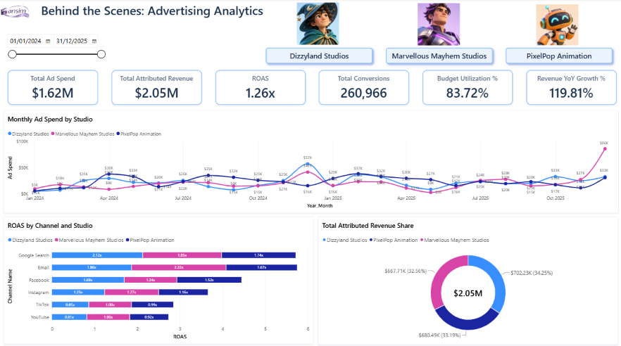

Three different approaches to turning complex data
into business value.
01 / BUSINESS INTELLIGENCE
Marketing & Advertising Analytics

An interactive Power BI dashboard analyzing advertising
performance, conversion funnels, ROAS, and budget
optimization across three fictional animation studios,
using an original synthetic dataset.
Power BI · DAX · Data Modeling · Marketing Analytics
Completed · Portfolio Project
View Dashboard & Project Details ↗
02 / ADVANCED ANALYTICS
Programmatic Media Efficiency
Analyzing large-scale real-time bidding data
to evaluate media costs, bidding performance,
and potential bid price optimization opportunities.
Python · SQL · DuckDB · Data Engineering
In progress
03 / ARTIFICIAL INTELLIGENCE
Natural Language BI Assistant
A planned AI-powered analytics solution
exploring how business users can ask questions
in natural language and receive data-driven
answers through a semantic layer.
Snowflake · SQL · Semantic Layer · LLMs
Planned